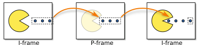

Video Playback for Games with VP9
When working on porting an older PC game to a modern version of Windows I needed play its prerecorded videos in-game. Commercial engines (Unity, UE4) include this functionality, and there are also standalone solutions Bink that can work for a custom engine. I wasn’t interested in licensing a commercial product, so I developed my own video player.
Why VP9?
The reference implementation, libvpx, is great:
- Decode speed, video quality, video size (source)
- Good examples and documentation (example)
- API that doesn’t control execution flow or I/O
- Small binary footprint (~200KB from the decoder)
- Free license
FFmpeg or Microsoft’s Media Foundation are the only real alternatives here on Windows, but they have poorly designed APIs with unattractive licenses.
VP9 Format and Theory
To get a video file we can work with, take whatever sample video you like and re-encode it to VP9 in the IVF container. I use FFmpeg to take care of this:
ffmpeg -i input.mp4 -c:v libvpx-vp9 -b:v 2M output.ivf
The resulting binary data consists of a header:
bytes 0-3 signature: 'DKIF'
bytes 4-5 version (should be 0)
bytes 6-7 length of header in bytes
bytes 8-11 codec FourCC (e.g., 'VP80')
bytes 12-13 width in pixels
bytes 14-15 height in pixels
bytes 16-19 frame rate
bytes 20-23 time scale
bytes 24-27 number of frames in file
bytes 28-31 unused
…and a sequence of frames:
bytes 0-3 size of frame in bytes (not including the 12-byte header)
bytes 4-11 64-bit presentation timestamp
bytes 12.. frame data
Each frame can either be an i-frame or a p-frame. The i-frame contains the full image data for a frame and doesn’t depend on any previous decoder state. The p-frame contains transformation data that is applied to a previous i-frame or p-frame. Typically you have an i-frame every few seconds, followed by many p-frames.

Each of these frames contains YUV data instead of typical RGB data you’d find in an image. The benefit for this format is you only need to store a full resolution version of the Y (luma) channel. The UV (chrominance) components can be stored at half the native resolution.
Parsing the IVF
Following the specification:
#include <vpx/vp8dx.h>
#include <vpx/vpx_decoder.h>
#include <vpx/vpx_image.h>
#include <stdlib.h>
#include <stdint.h>
#include <string.h>
#pragma pack(push, 1)
struct ivf_header_t {
uint32_t signature;
uint16_t version;
uint16_t length;
uint32_t codec;
uint16_t width;
uint16_t height;
uint32_t framerate;
uint32_t timescale;
uint32_t num_frames;
uint32_t unused;
};
#pragma pack(pop)
struct video_frame_t {
uint32_t pos;
uint32_t bytes;
uint8_t kf;
};
struct video_t {
uint8_t* src;
video_frame_t* frames;
uint32_t frame_count;
uint32_t us_frame_duration;
uint32_t us_video_duration;
};
bool load_video(video_t* ivf, uint8_t* src, uint32_t src_bytes) {
memset(ivf, 0, sizeof(*ivf));
if (src == nullptr || src_bytes <= sizeof(ivf_header_t)) {
return false;
}
auto header = *(ivf_header_t*)src;
uint32_t const signature = 0x30395056;
if (header.codec != signature || header.framerate == 0 || header.num_frames == 0) {
return false;
}
ivf->frames = (video_frame_t*)calloc(header.num_frames, sizeof(video_frame_t));
if (ivf->frames == nullptr) {
return false;
}
uint32_t num_frames = 0;
uint32_t data_pos = sizeof(ivf_header_t);
uint32_t data_end = src_bytes - 12;
for (;;) {
if (data_pos >= data_end) {
break;
}
auto frame_bytes = *(uint32_t*)(src + data_pos);
if (data_pos + frame_bytes > src_bytes) {
break;
}
data_pos += 12;
auto frame = &ivf->frames[num_frames++];
frame->pos = data_pos;
frame->bytes = frame_bytes;
vpx_codec_stream_info_t si;
if (vpx_codec_peek_stream_info(
&vpx_codec_vp9_dx_algo,
src + data_pos,
frame_bytes,
&si) == VPX_CODEC_OK) {
// I-frames are also called "key frames", or shortened to just kf.
frame->kf = si.is_kf;
}
data_pos += frame_bytes;
if (num_frames >= header.num_frames) {
break;
}
}
ivf->frame_count = num_frames;
ivf->us_frame_duration = (1000000ll / header.framerate);
ivf->us_video_duration = ivf->us_frame_duration * num_frames;
ivf->src = src;
return true;
}
I make the assumption that the videos are going to be constant framerate, but if you really need to work with variable framerate data you can always read the timestamp from the frame metadata. I preprocess the video data in the parser to determine where the i-frames are in advance. This will help with video seeking during playback.
Video Decoding
// Returns the current time in microseconds.
int64_t timer_query();
// Updates a render texture for a given plane.
void render_update_plane(uint32_t idx, void const* src, uint32_t stride, uint32_t w, uint32_t h);
struct video_player_t {
video_player_t(int32_t res, int32_t res_y);
~video_player_t();
void load(video_t* video_in);
void update(int64_t us_time);
protected:
static int32_t vpx_img_plane_width(const vpx_image_t *img, int32_t plane);
static int32_t vpx_img_plane_height(const vpx_image_t *img, int32_t plane);
vpx_codec_ctx_t codec;
video_t* video;
int32_t video_index;
int32_t size_x;
int32_t size_y;
int32_t half_x;
int32_t half_y;
bool initialized;
};
video_player_t::video_player_t(int32_t res_x, int32_t res_y) {
size_x = res_x;
size_y = res_y;
half_x = res_x / 2;
half_y = res_y / 2;
video_index = -1;
vpx_codec_dec_cfg_t cfg;
cfg.threads = 1;
cfg.w = res_x;
cfg.h = res_y;
initialized = (vpx_codec_dec_init_ver(
&codec,
vpx_codec_vp9_dx(),
&cfg,
0,
VPX_DECODER_ABI_VERSION) == VPX_CODEC_OK);
}
video_player_t::~video_player_t() {
if (this->initialized) {
vpx_codec_destroy(&codec);
}
}
void video_player_t::load(video_t* video_in) {
if (video != video_in) {
video = video_in;
video_index = -1;
}
}
void video_player_t::update(int64_t us_time) {
if (initialized == false || video == nullptr || video->frame_count < 2) {
return;
}
int64_t us_looped = us_time % video->us_video_duration;
int32_t frame_index = (us_looped / video->us_frame_duration) % video->frame_count;
if (video_index > frame_index) {
video_index = -1;
if (vpx_codec_decode(&codec, NULL, 0, NULL, NULL) != VPX_CODEC_OK) {
return;
}
}
int64_t us_decode_start = timer_query();
// Force a first frame decode if the video is unloaded.
if (video_index < 0) {
video_frame_t frame = video->frames[0];
if (vpx_codec_decode(&codec, video->src + frame.pos, frame.bytes, NULL, 0) == VPX_CODEC_OK) {
video_index = 0;
}
}
// Seek to nearest keyframe.
for (int32_t index = video_index + 1; index < frame_index; ++index) {
if (video->frames[index].kf) {
video_index = index;
}
}
// Decode until we hit the loop stop point, or it takes too long.
while (video_index < frame_index) {
int64_t us_decode_now = timer_query();
if (us_decode_now - us_decode_start >= 8000) {
break;
}
video_frame_t frame = video->frames[video_index++];
if (vpx_codec_decode(&codec, video->src + frame.pos, frame.bytes, NULL, 0) != VPX_CODEC_OK) {
break;
}
}
vpx_codec_iter_t iter = NULL;
vpx_image_t* img = vpx_codec_get_frame(&codec, &iter);
if (img && img->fmt == VPX_IMG_FMT_I420) {
// Y, U, V
for (uint32_t i_plane = 0; i_plane < 3; ++i_plane) {
int32_t w = vpx_img_plane_width(img, i_plane);
int32_t h = vpx_img_plane_height(img, i_plane);
render_update_plane(i_plane, img->planes[i_plane], img->stride[i_plane], w, h);
}
vpx_img_free(img);
}
}
int32_t video_player_t::vpx_img_plane_width(const vpx_image_t* img, int32_t plane) {
if (plane > 0 && img->x_chroma_shift > 0) {
return (img->d_w + 1) >> img->x_chroma_shift;
}
return img->d_w;
}
int32_t video_player_t::vpx_img_plane_height(const vpx_image_t* img, int32_t plane) {
if (plane > 0 && img->y_chroma_shift > 0) {
return (img->d_h + 1) >> img->y_chroma_shift;
}
return img->d_h;
}
This will be familiar if you’ve seen the libvpx samples. It’s a variation on their decoder with a extra features:
- Video swapping
- Video seeking
- Video looping
- Support for arbitrary video playback speeds
- Graceful degradation when the CPU can’t decode fast enough
Video swapping and position seeking are both implemented by removing any concept of playback state (play, pause, etc) from the video player and just working directly with the timestamp. This gives more control and has the added benefit of being easier to manage from the game side.
For fast playback rates (8x or higher in my experience) you’re likely to see very long decode times (~70ms) if you don’t have a lot of i-frames in your video. By querying the timer and limiting the amount of time per-frame is spent decoding, the video will play slower or skip until it’s able to catch up.
If you need to perform seeking a lot, an optimization that can be done is to search backwards from your estimated target frame for the nearest i-frame.
Video Rendering
The only notable piece of the rendering stack is the pixel shader (HLSL):
struct vs_output_t {
float4 pos : SV_POSITION;
float2 tex : TEXCOORD0;
};
Texture2D y_tex : register(t0);
Texture2D u_tex : register(t1);
Texture2D v_tex : register(t2);
SamplerState r_samp : register(s0);
float4 main(vs_output_t input) : SV_TARGET {
float3 yuv;
yuv.x = y_tex.Sample(r_samp, input.tex).r;
yuv.y = u_tex.Sample(r_samp, input.tex).r;
yuv.z = v_tex.Sample(r_samp, input.tex).r;
yuv += float3(-0.0627451017, -0.501960814, -0.501960814);
float4 output;
output.r = dot(yuv, float3(1.164, 0.000, 1.596));
output.g = dot(yuv, float3(1.164, -0.391, -0.813));
output.b = dot(yuv, float3(1.164, 2.018, 0.000));
output.a = 1.0f;
return output;
}
The Y, U and V planes are provided as DXGI_FORMAT_R8_UNORM textures to the shader and
are recombined to form an RGB image. As noted before, the only full resolution texture is
the Y plane, and the U and V planes are half resolution.
Sound
I found it simpler to use a minimal video container like IVF than deal with something that combined both video and audio streams into a single file. While you’d want the video synced to the audio, as long as you can query the audio playback timestamp or keep the playback state the same as the video you shouldn’t have any issues with keeping the video audio players decoupled.
Demo and Source
I’ve put together a simplified (but fully functional) VP9 player that can take a user provided IVF file and play it back. It also shows the full D3D11 renderer in all its verbosity, as that would be too long to post in the article itself. The demo is available on my GitHub.